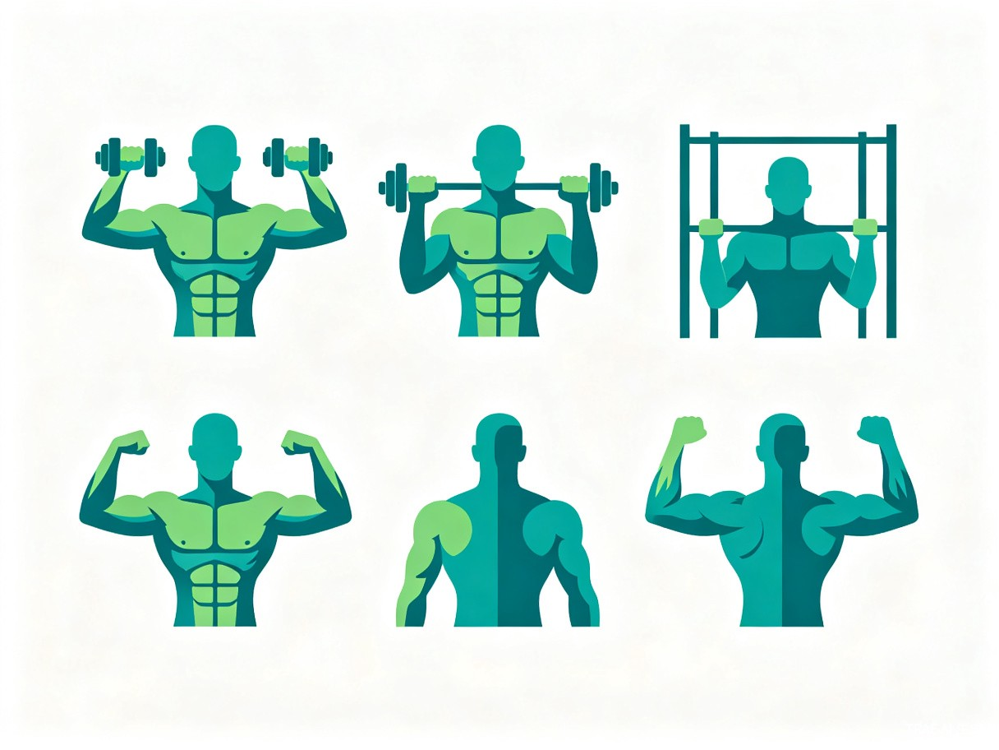
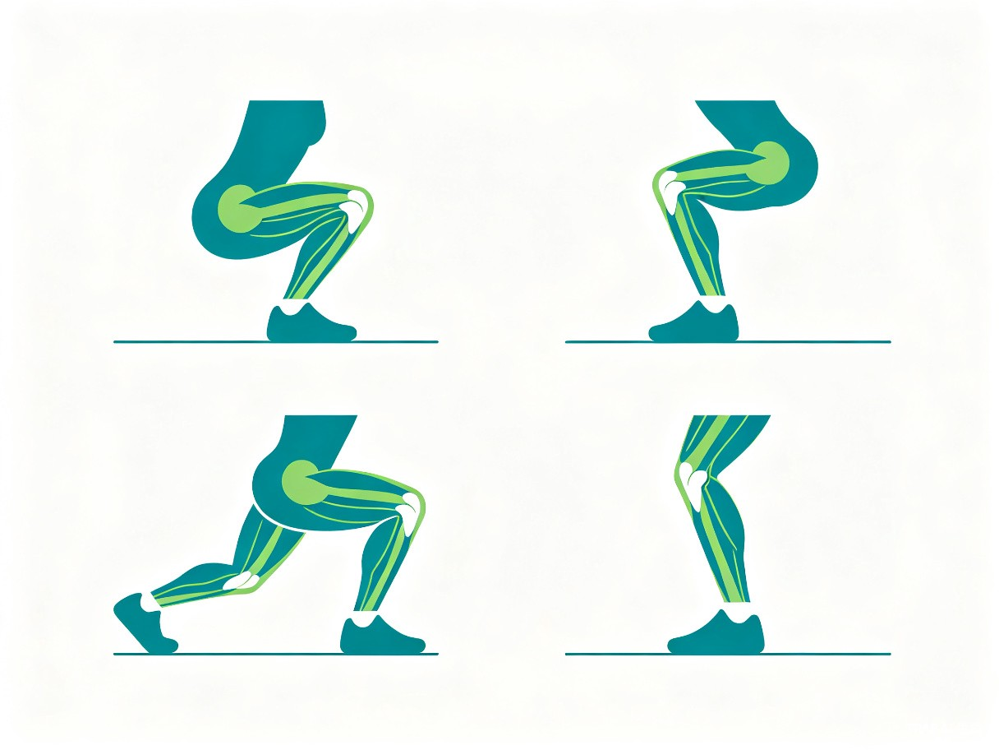
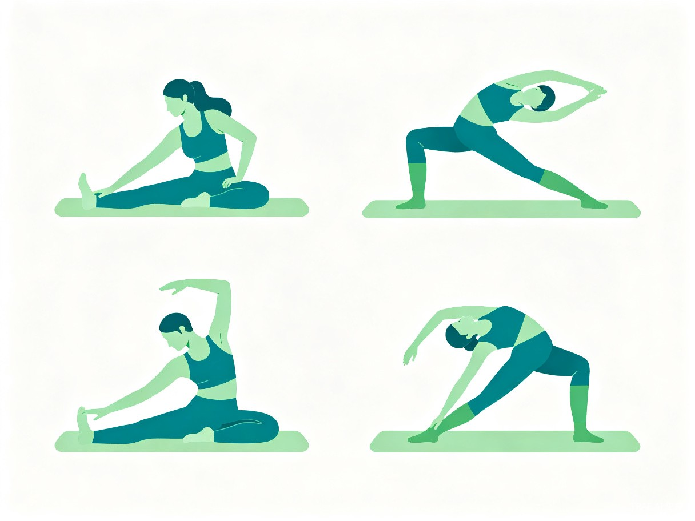

精准运动
关节肌肉针对性训练
科学认知身体每一处关节与肌群，用正确的运动守护健康
Contents · 目录
今天的分享内容
认识关节与肌肉
人体主要关节分类与核心肌群概览
上肢关节训练
肩、肘、腕的针对性运动方案
下肢关节训练
髋、膝、踝的针对性运动方案
躯干核心训练
脊柱、腰腹的稳定性与灵活性
运动安全与拉伸恢复
热身原则、常见误区与拉伸指南
Part · 01
认识关节与肌肉
了解身体构造，是科学运动的第一步
Anatomy · 人体构造
人体六大主要关节
关节是骨骼连接处，不同类型的关节决定了运动方向和范围
Part · 02
上肢关节训练
肩、肘、腕的精准强化方案

Shoulder · 肩关节
肩关节
全方向灵活性训练
肩关节是人体活动范围最大的关节，由肩胛骨、锁骨和肱骨构成。强化肩部肌群可以有效预防肩周炎和肩袖损伤。
- 1
哑铃推举
强化三角肌前束和中束，3组x12次
- 2
侧平举
激活三角肌中束，改善肩部线条
- 3
面拉
强化后三角肌和肩袖肌群
- 4
肩环绕
热身与恢复，360度活动肩关节
Elbow & Wrist · 肘与腕
肘关节与腕关节专项强化
肘关节训练
肘关节连接上臂和前臂，主要功能是屈伸。强化肱二头肌和肱三头肌。
- 1
哑铃弯举
肱二头肌，3组x10次
- 2
三头臂屈伸
肱三头肌，3组x12次
- 3
锤式弯举
肱桡肌与前臂，3组x10次
腕关节训练
腕关节由8块腕骨组成，精细运动能力强。适合办公族预防腱鞘炎。
- 1
腕弯举
前臂屈肌，3组x15次
- 2
腕伸展
前臂伸肌，3组x15次
- 3
握力训练
握力器，3组x30秒
办公族提醒
长时间使用鼠标键盘容易导致腕管综合征。建议每工作45分钟做一次腕部旋转和伸展，每个方向保持15秒。
Part · 03
下肢关节训练
髋、膝、踝的承重与稳定训练

Lower Body · 下肢
髋膝踝
三大关节联动训练
下肢关节承担全身重量，是行走、跑步、跳跃的基础。科学训练可以增强关节稳定性，预防运动损伤。
髋关节
深蹲、臀桥、蚌式开合
膝关节
腿弯举、坐姿腿屈伸、靠墙静蹲
踝关节
提踵、单腿平衡、弹力带抗阻
膝关节保护要点
深蹲时膝盖不超过脚尖，避免内扣。跑步时选择合适的鞋子，控制跑量循序渐进。
Part · 04
躯干核心训练
脊柱与腰腹的稳定性是一切运动的基础
Core · 核心肌群
脊柱与腰腹稳定性训练
核心肌群包括腹直肌、腹斜肌、竖脊肌、多裂肌等，是连接上下肢的力量枢纽
稳定性训练
- 1
平板支撑
全身核心激活，从30秒起步逐步增加
- 2
死虫式
抗伸展训练，保护腰椎
- 3
鸟狗式
平衡与协调，激活多裂肌
力量训练
- 1
卷腹
腹直肌上部，3组x15次
- 2
俄罗斯转体
腹斜肌，3组x20次
- 3
超人式
竖脊肌，强化下背部
Part · 05
运动安全与恢复
科学训练不仅在于练什么，更在于怎么练
Safety · 安全原则
科学运动的六大原则
1. 充分热身
运动前5-10分钟低强度活动，提高肌肉温度和关节润滑度
2. 渐进超负荷
逐步增加训练强度，每周增量不超过10%
3. 正确姿势
动作标准优先于重量和次数，错误姿势是损伤主因
4. 充分休息
同一肌群至少休息48小时，给肌肉修复和生长的时间
5. 倾听身体
区分肌肉酸痛和关节疼痛，后者应立即停止训练
6. 拉伸恢复
运动后静态拉伸15-30秒/组，促进恢复减少酸痛
Recovery · 恢复
运动后
必做的拉伸指南
拉伸是运动不可或缺的环节，能促进血液循环、加速代谢废物排出、减少延迟性肌肉酸痛。
- 1
肩部拉伸
跨臂拉伸，每侧保持20秒
- 2
胸部开合
门框拉伸，改善圆肩驼背
- 3
腘绳肌拉伸
坐姿前屈，保持30秒
- 4
股四头拉伸
站立抓脚踝，每侧20秒
- 5
小腿拉伸
推墙式，每侧20秒

谢谢
科学运动，精准训练，守护每一处关节